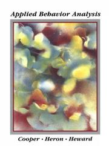

Applied Behavior Analysis
Book·John O. Cooper, Timothy E. Heron, William L. Heward, 1987·应用行为分析

The most widely used textbook in the field. It systematically covers behavior measurement, experimental design, reinforcement and extinction procedures, and their application in education and clinical settings. First published in 1987.
- Author
- John O. Cooper, Timothy E. Heron, William L. Heward
- Year
- 1987
- Difficulty
- Advanced
- Kind
- Overview
- Schools
- Applied Behavior Analysis
- Core theories
- Seven Dimensions of ABA
Editions
- Chinese edition 《应用行为分析》 John O.Cooper、Timothy E.Heron、William L.Heward · tr. 美国展望教育中心 · 武汉大学出版社 · 2012 Douban 8.8 (32 ratings) Douban page ↗
- English edition Applied Behavior Analysis John O. Cooper, Timothy E. Heron, William L. Heward · Third edition, Pearson · 2020 Open Library ↗